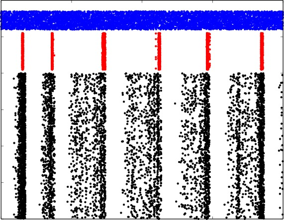
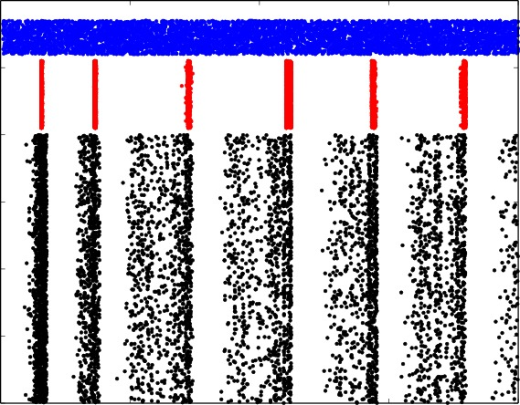
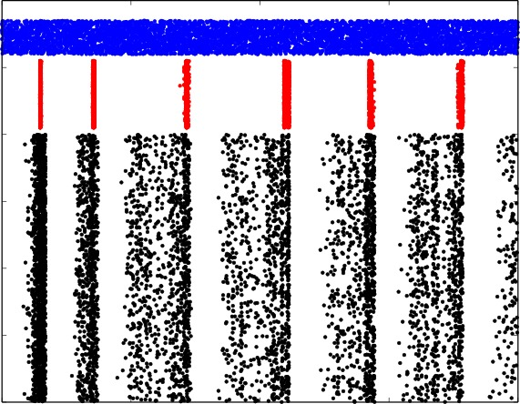
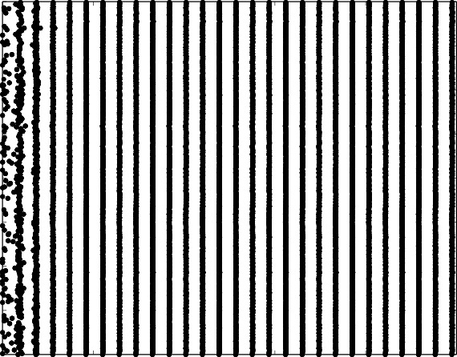
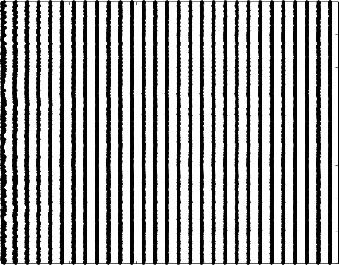
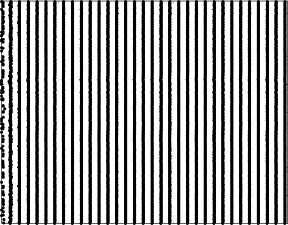

To use theses scripts you need python libraries:
matplotlib and LaTeX for correct graphical interface
and simulators:
NEURON Release 7.4 (1370:16a7055d4a86) 2015-11-09
NEST version 2.12.0.
BRIAN version 2.0.1
Under Ubuntu or any other Debian based Linux, run
sudo apt-get install python-numpy python-scipy
python-matplotlib texlive-full cython.
You can use yum or zymm under RadHad or SUSE based Linux distributions.
You may also use sudo pip install numpu scipy matloblib cython in any distribution.
Follow instructions for installation NEURON, NEST and BRIAN simulators.
To obtain results of the Case Study 1, cd into directory CaseStudy1-5000LIF
cd CaseStudy1-5000LIF
and run simulations
./Benchmark.sh
The raster diagrams for each software will be shown.
|
BRIAN  |
NEST  |
NEURON  |
Statistics of software performance and number of lines and characters in corresponding modules and scripts will printed out in standard output. This statistics was used to obtained results of the case study.
NEST module hh_psc_alpha does NOT completely implement the system of differential equations (2) in the paper. This module has a synaptic model with an injected current instead of a model with reversal potential and conductance. The difference slightly reduces the computational load for the NEST benchmark and does not affect any results of Case Study 2. This inaccuracy was found after the publication. The authors have posted this note to prevent further confusion.
To obtain results of the Case Study 2, cd into directory CaseStudy2-400HH
cd CaseStudy2-400HH
and run simulations
./Benchmark.sh
The raster diagrams for each software will be shown.
|
BRIAN  |
NEST  |
NEURON  |
Statistics of software performance and number of lines and characters in corresponding modules and scripts will printed out in standard output. This statistics was used to obtained results of the case study.